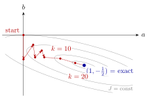
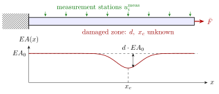

Supplement S1
Worked PINN Examples in One Dimension
Supplement to Lecture B. Six worked examples, from a physics-informed network trained with a pencil to the identification of a hidden damage zone. Every example is implemented in Exercise B1; all numbers below were verified numerically.
S1.1 Overview
Lecture B described a physics-informed network as Lecture 2’s collocation method with a neural network in place of the polynomial. Here you run one: first with a pencil, on an example so small that every number can be written out, and finally on a problem where the method is the sensible tool. The way there leads through six examples, each adding one ingredient to the one before:
| no. | example | what is new |
|---|---|---|
| 1 | one-parameter ansatz, both boundary conditions built in | the loss and the training loop |
| 2 | two parameters, one boundary condition as a penalty | soft constraints, a harder landscape |
| 3 | a small tanh network | a loss with no closed-form minimum |
| 4 | two springs, measured displacements | the inverse question |
| 5 | a bar with unknown stiffness and one measurement | a data term, a trained material parameter |
| 6 | a bar with a hidden damage zone | all of the above together |
Every example uses the bar of Lecture 2, and every result can be checked independently — against an exact solution, a statics argument, or a result from Lectures 1 and 2. Why that is possible, and what it means for problems in two dimensions, is taken up in Section S1.4.
S1.2 Forward problems
Throughout: the fixed–free bar of Section 2.12, \(EA = 1\), \(L = 1\), constant load \(n_0 = 1\), free end: \[u'' + 1 = 0, \qquad u(0) = 0,\quad u'(1) = 0, \qquad u_{\mathrm{ex}}(x) = x - \tfrac{x^2}{2}.\] Chosen deliberately: it is the problem the two-element FEM solved exactly at the nodes in one \(2\times2\) solve — the benchmark every example is measured against.
Example 1: a one-parameter PINN by hand
Take the one-parameter ansatz \[\tilde u(x; a) = a\,\varphi(x), \qquad \varphi(x) = x - \tfrac{x^2}{2},\] which satisfies \(\tilde u(0)=0\) and \(\tilde u'(1) = a(1-x)|_{x=1} = 0\) for every \(a\) — both boundary conditions are hard, built into the family (the Lecture 2 trick; also exactly what the multiplier construction \(\bar u + x\cdot\mathrm{NN}\) does for networks). The residual is constant in \(x\): \[R(x) = \tilde u'' + 1 = -a + 1,\] so the collocation loss is the same whatever points we pick — a deliberate simplification: \[J(a) = (1-a)^2, \qquad J'(a) = -2(1-a).\] Gradient descent, \(a^{k+1} = a^k - \eta J'(a^k) = a^k + 2\eta(1-a^k)\), with \(\eta = \tfrac14\) from \(a^0=0\): the error \(1-a^k\) is halved every step, \[\begin{array}{c|cccccc} k & 0 & 1 & 2 & 3 & 4 & 5\\\hline a^k & 0 & \tfrac12 & \tfrac34 & \tfrac78 & \tfrac{15}{16} & \tfrac{31}{32}\\[0.5mm] J(a^k) & 1 & \tfrac14 & \tfrac1{16} & \tfrac1{64} & \tfrac1{256} & \tfrac1{1024} \end{array}\] — exact arithmetic, no computer, converging to \(a=1\), i.e. to \(u_{\mathrm{ex}}\) itself. Every PINN ingredient is present in miniature: a parameterized ansatz, a pointwise equation residual, a squared loss, a training loop. Nothing is hidden, and you have run a PINN with a pencil.
Key idea
Nothing about “training on the physics” is mysterious: it is a loss built from an equation, and a walk downhill. What is genuinely difficult comes later, and lies elsewhere — in richer ansätze and rougher landscapes.
Example 2: one soft boundary condition
Now un-build one boundary condition. Ansatz \(\tilde u = a x + b x^2\) (hard at \(x=0\) only); the free end becomes a penalty: \[J(a,b) = \underbrace{(2b + 1)^2}_{\text{residual }(\tilde u''+1)^2} + \;\lambda\,\underbrace{(a + 2b)^2}_{\text{penalty on } \tilde u'(1)} , \qquad \lambda = 1 .\] Still a quadratic bowl — minimum at \((a,b) = (1, -\tfrac12)\), again the exact solution — but no longer a round one: the penalty couples \(a\) and \(b\), and the bowl’s axes (eigenvalues \(0.47\) and \(8.53\) of the Hessian scale, ratio \(\approx 18\)) are badly mismatched. Gradient descent with \(\eta = 0.1\) zig-zags down the tilted valley (Fig. S1.1): fast across it, agonizingly slow along it — \(J\) drops from \(1\) to only \(0.08\) in ten steps, and needs about sixty to reach \(10^{-5}\). Three lessons per one figure:
Soft constraints cost twice: the condition is only approximately satisfied at any finite step, and the penalty reshapes the landscape (here: conditioning \(\approx 18\), and it worsens as \(\lambda\) grows — try it in Exercise B1).
The landscape, not the dimension, sets the pace — this two-parameter bowl already crawls.
The bowl is still a bowl: being quadratic, one normal-equation solve would jump straight to the minimum (Lecture A). Gradient descent is being used here only as a rehearsal for when we lose that option — which is the next example.

Example 3: one tanh unit
Replace the polynomial by the smallest genuine network, \(\tilde u(x) = x\cdot c\tanh(w x)\) (hard essential BC via the factor \(x\)). The residual is still writable by hand — \[\tilde u'' = 2cw\,\mathrm{sech}^2(wx) - 2cw^2 x\,\tanh(wx)\,\mathrm{sech}^2(wx)\] — but the loss is no longer quadratic in \((c,w)\), no formula reaches its minimum, and the walking that Examples 1–2 rehearsed becomes the only option. This is the precise cliff edge where the pencil stops and the computer takes over; Exercise B1 (Part 3) trains the \(H\)-unit version and compares against \(u_{\mathrm{ex}}\) and against the two-element FEM solution (which, embarrassingly for the network, is exact at the nodes).
S1.3 Inverse problems
Example 4: identifying the stiffness of a stepped bar
The discrete inverse idea, on the stepped steel bar of Lecture 1 (Section 1.7): we know the tip load \(F = 10\) kN and we have measured \(u_2 = 0.25\) mm, \(u_3 = 0.50\) mm; the two spring stiffnesses are unknown. The node equations of Lecture 1, read backwards: \[\begin{align*} \text{node 3:}\quad & k_2(u_3 - u_2) = F &&\Rightarrow\quad k_2 = \frac{10\,\text{kN}}{0.25\,\text{mm}} = 40\,\text{MN/m},\\ \text{node 2:}\quad & k_1 u_2 = k_2 (u_3 - u_2) &&\Rightarrow\quad k_1 = 40\,\text{MN/m}. \end{align*}\] Same equations, different unknowns — identification is equilibrium read in reverse. (With noisy or redundant measurements, read-in-reverse becomes least squares; that is where the data term of the next example comes from.) No differential equation was involved here: a chain of springs is a discrete structure, and identifying its stiffnesses is plain algebra. The differential equation returns with the next example.
Example 5: the smallest inverse PINN
Continuum version, minimal: bar fixed at \(0\), tip force \(\bar F\), no distributed load, unknown stiffness \(\kappa = EA\) (one number), and one measurement \(u^{\mathrm{meas}}\) at a station \(x_d\). Ansatz \(\tilde u = w x\) (hard BC; and since \(\tilde u'' = 0\) the interior residual vanishes identically — simplification on purpose). The loss carries one physics term and one data term, and the unknown material parameter is trained alongside the displacement parameters: \[J(w, \kappa) = \underbrace{\bigl(\kappa w - \bar F\bigr)^2}_{\text{force BC (physics)}} + \underbrace{\bigl(w x_d - u^{\mathrm{meas}}\bigr)^2}_{\text{data}} .\] Hand solution: the data term pins the field, \(w = u^{\mathrm{meas}}/x_d\); the physics term then exposes the material, \(\kappa = \bar F x_d / u^{\mathrm{meas}}\). With \(\bar F = 2\), \(x_d = 1\), \(u^{\mathrm{meas}} = 0.5\): \(w = 0.5\), \(\kappa = 4\) — checkable in one line against \(u = \bar F x/EA\). The division of labor is the whole message:
Key idea
In an inverse PINN, data pins the field; physics then reveals the parameter. Neither term alone suffices: data without physics fits a curve and learns nothing about \(EA\); physics without data has a one-parameter family of solutions (\(\kappa\) and \(w\) only constrained jointly). The loss is where measurement and law finally meet — the two residual notions of Lecture A in one functional.
Example 6: damage detection
Now the example that is not decorated homework. A bar has an unknown weakened zone (corrosion, a crack smeared into a notch): \[EA(x;\, d, x_c) = EA_0 \Bigl(1 - d\, e^{-\left((x - x_c)/w_z\right)^2}\Bigr),\] with damage depth \(d\) and location \(x_c\) unknown (zone width \(w_z\) assumed). Known tip load \(\bar F\); displacements measured at a handful of stations (Fig. S1.2). Find the damage.

Formulation.
One preparatory insight, straight from Case B of Section 2.4: with only a tip load, equilibrium integrates once by hand to \(N(x) = EA(x)\,u'(x) = \bar F\). We may therefore use the first-order residual \[R(x) = EA(x;\,d,x_c)\,\tilde u'(x) - \bar F\] instead of the second-order one — fewer derivatives of the network, a friendlier loss (the same gift, by the same move, that the weak form gave in Section 2.9). The unknowns are trained jointly: network weights \(\mathbf{w}\) for \(\tilde u(x) = x\cdot\mathrm{NN}(x;\mathbf{w})\), plus the two physical parameters \((d, x_c)\): \[J(\mathbf{w}, d, x_c) = \frac1m \sum_{i=1}^{m} R(x_i)^2 \;+\; \lambda_d \sum_{j} \bigl(\tilde u(x_j^{\mathrm{meas}}) - u_j^{\mathrm{meas}}\bigr)^2 .\]
Does it work?
Yes — and the prototype run (6 tanh units, 50 collocation points, 8 noiseless measurements, \(EA_0 = 1\), \(\bar F = 1\), \(w_z = 0.1\), \(\lambda_d = 2.5\), true values \(d = 0.5\), \(x_c = 0.6\), start values \(d = 0.1\), \(x_c = 0.4\), Adam optimizer of Section A.5) is reproduced in Exercise B1, Part 6 (column 0 shows the state after the first step): \[\begin{array}{c|ccccc} \text{step} & 0 & 600 & 1200 & 2400 & 3000\\\hline J & 0.082 & 2.0\cdot10^{-3} & 5.0\cdot10^{-4} & 6.4\cdot10^{-5} & 4.9\cdot10^{-5}\\ d & 0.08 & 0.478 & 0.492 & 0.498 & 0.499\\ x_c & 0.42 & 0.597 & 0.597 & 0.599 & 0.600 \end{array}\] The optimizer, told nothing but “here is the law, here are eight measured numbers,” locates the damage to three digits. This is the example where the method earns its complexity: there is no formula to look up, no linear system to partition — and yet the same loss anatomy as Example 1, traced once with a pencil, carries the whole thing.
S1.4 Two remarks
Remark
The determinacy caveat. Every example above is checkable by hand because the 1D bar with end load is statically determinate: \(N(x)\) follows from statics, so even Example 6 admits a shortcut (\(u' = \bar F / EA(x)\), then fit \((d, x_c)\) to the integrated profile — two-parameter curve fitting, no network needed). This is worth knowing for two reasons. First, it supplies an independent check of every result. Second, it marks precisely what the examples do not show: in 2D and 3D, with redundancy, the stress field depends on the unknown stiffness distribution, every shortcut dies, and the joint field-plus-parameter training is no longer a rehearsal but the actual method. The 1D examples teach the moves; the value of the moves lives one dimension up.
Remark
Thermal twin. Every example transposes to the rod of the exercise by the standard dictionary: identify conductivity \(\lambda(x)\) (e.g. a degraded insulation zone) from a few thermocouple readings under a known heat input. Nothing in the method changes; Exercise B3 carries out a transposition of this kind for a cooling fin.
S1.5 Examples, exercise parts and lecture sections
| example | Exercise B1 | related lecture sections |
|---|---|---|
| 1 pencil PINN | Part 1 | PINN loss: Section B.1 |
| 2 tilted valley | Part 2 | hard and soft BCs: Section B.2; gradient descent: Section A.5 |
| 3 one/many tanh units | Part 3 | networks as ansätze: Section A.6 |
| 4 stepped-bar interrogation | Part 4 | stepped bar: Section 1.7 |
| 5 smallest inverse PINN | Part 5 | scorecard, inverse problems: Section B.4 |
| 6 damage detection | Part 6 | Section B.4; continued in 2D in Section C.8 |
The companion notebook Exercise_B1_PINN.ipynb implements all six examples with self-check cells and, completed, reproduces every number quoted in this supplement.